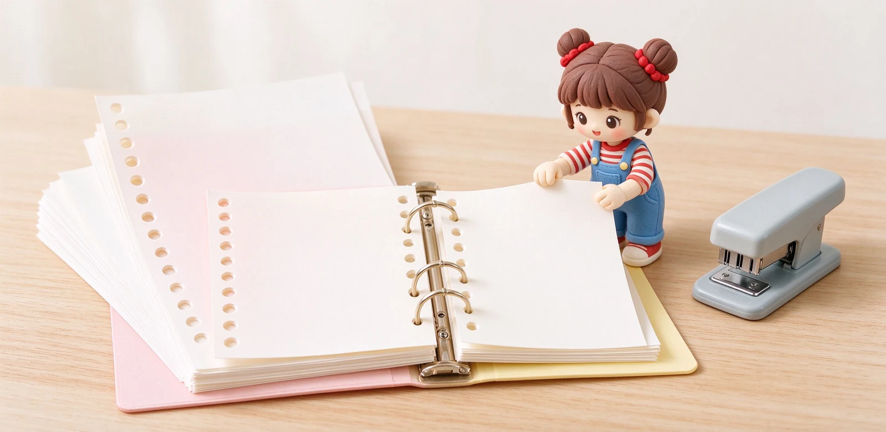
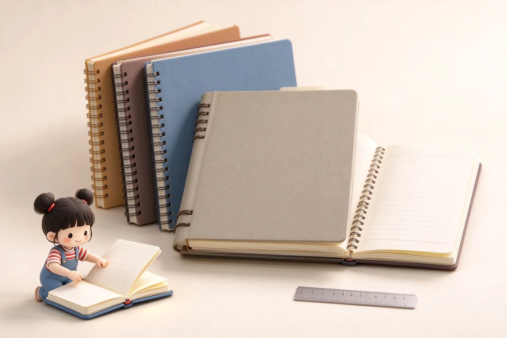

語意摘要：活頁系統由夾頁夾與打孔補充紙組成，台灣常見規格為 B5 26 孔、A5 20 孔、A4 30 孔，買錯孔數裝不上去。它適合需要長期分類、隨時抽換重組筆記的人；缺點是左側有孔不能寫到邊、要持續買補充紙、整本比同頁數膠裝本厚。先用一本中容量夾子測試自己會不會真的活用，再決定要不要擴大系統。
活頁到底解決了什麼問題
一般筆記本是從第一頁順著寫到最後，寫完就定案了。活頁的哲學完全不同：紙是一張一張獨立的，你可以隨時把某頁抽出來、插到別的主題後面、或抽出幾張影印給同學。它把「寫」跟「整理」分開了。
這對讀書筆記、專案資料、進度追蹤特別好用：你可以開一個主題夾，隨著學期推進把相關的講義重點、題目、反思一一歸位，而不用在一整本裡東一頁西一頁。
孔數規則：買錯尺寸真的裝不上去
活頁最容易踩的雷，就是尺寸與孔數不對。台灣與日系活頁紙有固定規格，孔數是對應尺寸的，不能混用：B5 是 26 孔、A5 是 20 孔、A4 是 30 孔。你買的補充紙跟夾子，尺寸與孔數都要一致。
| 紙張尺寸 | 孔數 | 常見用途 |
|---|---|---|
| A4 | 30 孔 | 報告、資料歸檔、辦公 |
| B5 | 26 孔 | 學生筆記最常見 |
| A5 | 20 孔 | 随身、手帳、個人系統 |
| B5 窄版（スリム） | 26 孔 | 輕薄型夾頁夾，頁數裝不多 |

補充紙怎麼選？克重與格式
活頁紙要長期買，所以紙質與格式很重要。以 KOKUYO Campus 活頁紙來說，B5 26 孔、100 裝，紙重約 75g/m²、厚度約 0.10mm，輕薄好寫，中性筆與一般鋼筆都還能應付。
- 大量中性筆筆記：75g 上下的校園活頁紙就夠，便宜好消耗。
- 要用鋼筆：選 80g 以上、標榜鋼筆適性的活頁紙，才不會暈背。
- 格式：線格適合筆記、方格適合圖表、點線適合手帳，可混著買。
- 長期保存：注意是不是中性紙，避免幾年後泛黃。
另外可以順便買幾張分類索引卡，把不同主題分開，這是活頁系統好不好用的關鍵，比紙本身還重要。
系統筆記怎麼規劃才不會亂
活頁最大的陷阱是「一開始想太複雜」。建議先用最簡單的分類：一本書、一門課、或一個專案用一個夾，內頁前面放索引，寫到新主題就加分頁。
- 一個夾子只服務一個主題或一門科目，不要全塞一本。
- 前面放分類索引卡，寫到新段落就更新。
- 隨時把相關的紙抽到正確位置，別靠記憶。
- 定期（例如每學期末）把寫完不再用的頁抽出歸檔，夾子才不會塞爆。
- 容量先抓中型（裝 50 到 100 張），用順了再換大夾。
活頁值得投資嗎？
如果你常需要分類、抽換、影印分送筆記，活頁很值得；多花的夾子錢與補充紙成本，換來的是可以無限重組的彈性。但如果你只是想順順寫完，一般筆記本單價更低、不用對孔距、也不用左邊讓出一條不能寫的孔。
常見問題 FAQ
活頁紙的孔數有什麼規則？
B5 活頁紙一般是幾克重？
活頁夾要買大容量的嗎？
活頁左側的孔會不會影響寫字？
一般筆記本跟活頁，到底選哪個？
資料來源與核實依據
- キャンパスルーズリーフ 無地 B5 26穴 100枚（KOKUYO コクヨ）
- キャンパスルーズリーフ 紙厚 75g/m2・0.10mm、B5 26穴（KOKUYO 公式オンラインショップ）
- Campus Loose Leaf Paper（B5/A5/A4 系列）（KOKUYO）
相關文章推薦

平裝、膠裝、線圈、線裝、活頁差別？筆記本裝訂方式優缺點
裝訂決定一本本子能不能平攤、拆不拆得下頁、耐不耐翻。需要邊寫邊壓就選線裝或可平攤款，需要自由抽換頁就選活頁。

筆記本怎麼選？尺寸、版型、用途與預算的抉擇順序
選筆記本順序搞反最容易後悔：先想你拿它來做什麼、每天帶不帶出門，再決定尺寸與版型，最後才看封面好不好看。

手帳怎麼選？週計畫、日計畫、無時間軸版型與挑選 8 問
手帳選錯版型，再漂亮也會被棄用。先想清楚你每天寫多少字、有沒有固定時刻行程，再決定週計畫、日計畫還是無時間軸。